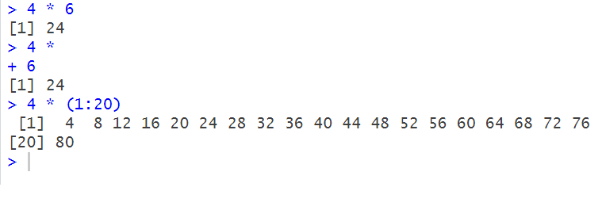
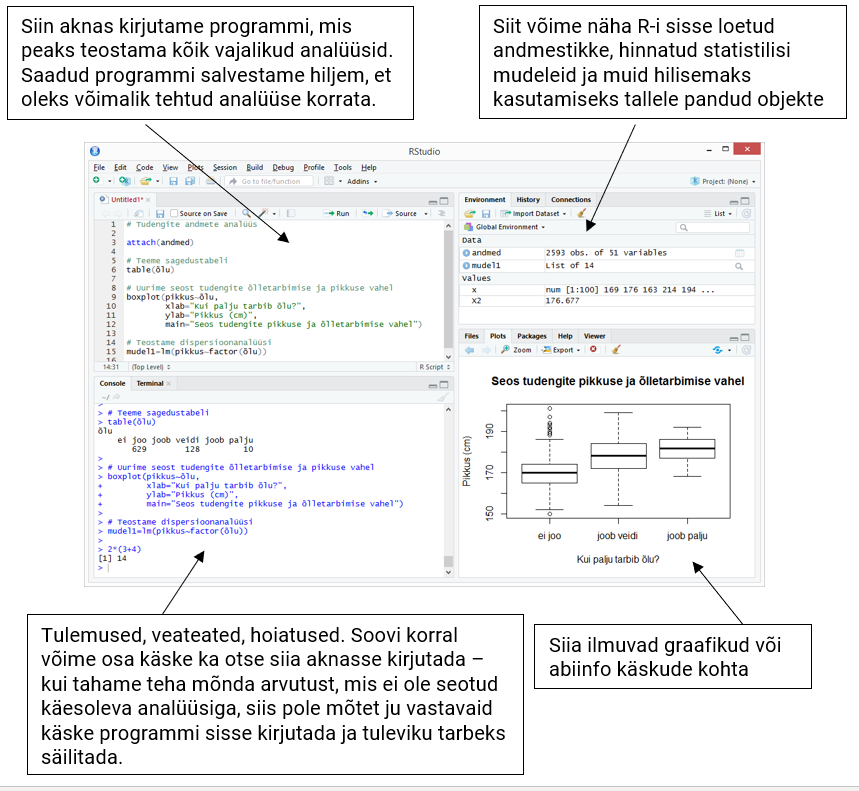

Teeme tutvust R-ga, vaatame mis see R on, käime üle R-i süntaksi olulisemad nüansid ja paneme R-i meie jaoks tööle.
R on vabavaraline programmeerimiskeel ja -keskkond, mis on arendatud statistiliseks andmetöötluseks. R-i kasutavate inimeste hulk on viimase kümmekonna aasta jooksul oluliselt kasvanud nii ülikoolides kui ka ettevõtetes, eriti viimase aja COVID-19 kriisi leviku uurimisel ja tulemuste avaldamisel. Populaarsuse kasvu põhjuseid on ilmselt palju aga peamised on vaba ligipääs, lai valik lisapakette, kvaliteetsete jooniste tegemise võimalus ja tegus kogukond.
Ametlik R tarkvara keskkond on kõrgema taseme programmeerimiskeel ja on peamiselt kirjutatud keeltes C, Fortran ja R-i enda keeles. R-i saab kasutada mitmetes operatsioonisüsteemides (nt. Windows, iOS, Linux). Kuigi R töötab käsurea põhimõttel, siis leidub hulganisti abistavat tarkvara, näiteks RStudio, mis hõlbustavad R-i koodi kirjutamist, koodi haldamist ja käskude käivitamist. Lisaks on R ühilduv mitmete teiste analüüsitarkvaradega (nt. MS EXcel, Tableau, SPSS, SAS).
Seega kui õpid R-i siis oskad paljusid asju teha ka teistes tarkvarades!
R-i kodulehelt saab vajaliku tarkvara alla laadida: http://www.r-project.org/
Programm R ise on äärmiselt minimalistlik ja seetõttu ka minimalistlik kasutajaliides. Ava:
R (Linux)Programmi käivitades on näha ainult konsooliaken. Rea ees olev märk > näitab, et R ootab uut käsku. Käsud saab kirjutada sümboli > järele, sealjuures võib üks käsk paikneda mitmel järjestikusel real. Kui R-i arvates on käsu sisestamine pooleli, on konsoolirea alguses sümbol +, sel juhul võib käsu sisestamist uuest reast jätkata. Kui aga reavahetus on lisatud ekslikult, näiteks on koodis näha viga just eelnevas reas (mida pärast reavahetuse lisamist enam redigeerida ei saa) saab uue tühja käsurea tekitada vajutades Esc klahvi.
Kui käsk on sisestatud, siis enter-klahvi vajutamise järel käsk täidetakse ja tulemus trükitakse konsooliaknasse. Sageli on siis rea alguses kantsulgudes mingi arv, mis näitab, mitmes tulemuse element on rea alguses – nimelt võib tulemus mõnikord koosneda mitmest elemendist.
Näide R-i käskudest ja milline on tulemus konsooliaknas:
4 * 6
4 *
6
4 * (1:20)
NB! Pane tähele kuidas konsoolis paistab välja poolik käsk (4 * rida ootab ilmselgelt teist korrutatavat). See + märk ei ole mitte liitmise tehe, vaid R-i märguanne, et tema jaoks on käsk poolik ehk praegusel juhul oodati teist korrutatavat eelmise rea käsu lõpetamiseks.
Kui konsooliaknas olles vajutada üles- või allanooleklahvi, saab sirvida eelnevalt täidetud käske.
Kahjuks on R-i kasutajaliides mõnevõrra ebamugav. Näiteks konsooliaknas ei saa hiirega kursori asukohta muuta. Samuti on kogu tekst sama värvi (koodi värvimine puudub). Üks alternatiivne kasutajaliides R-i kasutamiseks on RStudio, kus neid puuduseid pole ning millega on natuke hõlpsam koodi kirjutada. Praktikumides hakkamegi edaspidi kasutama programmi RStudio.
Leia oma arvutis programm RStudio, kui sa pole seda veel paigaldanud, siis saad selle tasuta alla laadida RStudio kodulehelt. NB! RStudio pole ainus R-i kasutajaliides, on veel palju teisi aga pidime valima ühe aga pea kõik kursusel käsitletav on tehtav igas teises R-i kasutajaliideses.
Teeme tutvust RStudio-ga (kui valisid selle):
> järele;Enter-klahvi vajutamist;+ rea ees näitab, et käsk on pooleli.;#-märk;Ctrl+Enter.
Konsooli käskude sisestamise asemel on neid mõistlik kirjutada skriptifaili, et hiljem (nt järgmisel päeval) saaks tehtud tööd (näiteks mingi analüüsi) kiiresti jätkata või uuesti teha kui on lisandunud uued andmed. Skriptifaili tekitamiseks R-is tuleks valida menüüst File valik New script. Avatakse skriptiaken, kuhu saab käske kirjutada. Kui skriptiaknas olles vajutada klahve Ctrl+Enter, siis vastaval real olev käsk saadetakse R-ile täitmiseks. Kui käsk on kirjutatud mitmel real või on soov mitut käsku järjest jooksutada, võib vastavad read skriptiaknas hiirega ära märkida ning seejärel Ctrl+Enter vajutada. Valides menüüst File valiku Save, salvestatakse .R lõpuga skriptifail kasutaja poolt määratud asukohta.
RStudio skripti aken
log(5.9) # võtame naturaallogaritmi arvust 5,9
# terve see rida on kommentaar, sest rea alguses on # ehk trellide sümbolPane tähele, et kümnendmurru eraldamiseks kasutatakse R-is punkti, mitte koma.
R-is on võimalik teha kõiki lihtsamaid aritmeetilisi tehteid, sealjuures järgitakse matemaatikas kasutatavat tehete järjekorda (sulgusid lisades on võimalik seda muuta):
1 + (2 - 3) * 4 / 52^3 - 2**3 – astendamiseks saab kasutada sümboleid ^ ja **5 %% 3 – modulo (jääk jagamisel)log(exp(1)) * cos(-pi) * sqrt(9) + factorial(4) - choose(4, 2) * min(4, 5, 2)1/0 annab tulemuseks Inf (infinity)0/0 annab tulemuseks NaN (not a number)Ülalolevad aritmeetikaavaldised sqrt(9), choose(4, 2) jne on tegelikult käsud ehk funktsioonid, mis oskavad teatud asju teha (praeguses näites teatud arvutusi teha). Kõigil käskudel on sarnane süntaks:
käsk(argumendid)
Üldiselt on käsu argumentidel ka nimed, näiteks käsk choose tahab täpselt kahte argumenti: n ja k. Mõnikord on kasulik argumentide nimed välja kirjutada, et hiljem koodi üle lugedes oleks aru saada, mida miski tähendab:
choose(n = 4, k = 2)Kui kasutada argumentide nimesid, siis ei ole tähtis, millises järjekorras argumendid käsule ette anda. Ent kui argumentide nimesid ei kasuta, tuleb olla ettevaatlik:
choose(k = 2, n = 4)## [1] 6choose(2, 4)## [1] 0Osadel käskudel on mõnedele argumentidele antud niinimetatud vaikimisi väärtused. Neid argumente ei pea (aga võib) käsu kasutamisel välja kirjutama kui vaikimisi argument on parajasti sobiv väärtus. Näiteks on käsul log vaikimisi määratud argumendi base ehk logaritmi aluse väärtus arvuga \(e \approx 2.718282\) st käsk arvutab naturaallogaritmi. Kui on soov leida naturaallogaritmi arvust 8, siis võib käsu kirja panna log(8), kui aga on vaja leida arvu 8 logaritmi baasil 2, siis tuleks argumendi base vaikimisi väärtust muuta, ehk
log(8, base = 2)## [1] 3Kui mingi konkreetse käsu kohta soovitakse abi saada (näiteks kontrollida, mis on käsu argumentide nimed ja millises järjekorras need tuleks ette anda), võib konsooli trükkida ?käsu_nimi või ka ??otsitav_tekst:
?choose
??"logarithm"Tasub tähele panna, et R on (nagu suurem osa programmeerimiskeeli) tõstutundlik – see tähendab, et programm eristab suuri ja väikeseid tähti. Kui ajada käsu või argumendi nimes mõni suur- ja väiketäht segi, siis on tulemuseks veateade:
Log(5)## Error in Log(5): could not find function "Log"log(8, BASE = 2)## Error in log(8, BASE = 2): unused argument (BASE = 2)log10, mis on selle argumendid.?"*".Sageli on mugav, kui töös kasutatavatele muutujatele nimi anda – siis saame neid edaspidi nimepidi kutsuda. Näiteks kui nimetada kaal <- 70 ja pikkus <- 185 ehk konsoolil
kaal <- 70
pikkus <- 185siis saaks kehamassiindeksit arvutada nii:
kaal / (pikkus / 100)**2## [1] 20.45289Tekitasime esimesel sammul töökeskkonda kaks objekti, mille nimed on kaal ja pikkus. Täpsemini: tekitasime objektid kaal ja pikkus, millele omistasime väärtused 70 ja 185. Sümboliühendit <- nimetatakse omistamisoperaatoriks. Üldjuhul töötab omistamisoperaatorina ka võrdusmärk =, ent on mõned erandjuhtumid, kus need erinevalt töötavad; lisaks on võrdusmärk kasutusel käskude argumentidele väärtuse andmisel.
Kui nüüd muuta kaal väärtust: kaal <- 90 , siis konsoolis ülesnoolega üle-eelmise käsu (KMI arvutamise) üles otsides saab seda lihtsasti uuesti jooksutada.
kaal / (pikkus / 100)**2## [1] 26.29657Siit maksab tähele panna ka seda, et muutujale uut väärtust omistades kirjutatakse vana lihtsalt üle, mingit hoiatust R ei anna.
Töökeskkonnas olevatest objektidest saab ülevaate käsuga ls(). Töökeskkonnas olevaid objekte saab kustutada käsuga rm(.) (sulgudes olev punkt asendada sobivate argumentidega):
rm(kaal, pikkus)
ls() #kontrolli, kas objektid kustutati töölaualtLisaks skriptifailile on võimalik ka töökeskkonda salvestada ning hiljem see uuesti sisse laadida. Selleks peab R-is konsooliakna aktiivseks tegema ja valima menüüst File vastavalt Save workspace või Load workspace. RStudios leiab need toimingud aga menüüst Session. Käsurealt on töökeskkonda võimalik salvestada RData failiks käsuga save.image().
Töökeskkonna salvestamisel salvestatakse kõik antud töökeskkonnas olnud objektid RData-faili. Hiljem saab kõik need objektid jälle RData failist töökeskkonda laadida käsuga load(".RData"). RData formaati üldiselt teised statistikaprogrammid lugeda ei oska. Kui salvestatud on käskude ehk skripitfail (laiendiga .R), siis objektide eraldi salvestamine pole enamasti vajalik.
Eelmises punktis vaatasime juhtu, muutujate väärtuseks oli üks arv. Objekti võib aga moodustada ka mitmest väärtusest, näiteks omistame kuue uuritava kaalud muutujale nimega kaalud ja muutujale liik uuritavate liigid:
kaalud <- c(7, 3.5, 0.4, 2, 3.2, 20.2)
liik <- c("koer", "kass", "rott", "kass", "kass", "koer")Funktsiooni c(.) korral on tegemist käsuga, mis sellele antud argumendid kombineerib (combine) kokku üheks vektoriks (järjendiks). Kui kombineeritakse erinevat tüüpi väärtuseid (näiteks teksti ja arve), siis muudetakse kõik väärtused selliseks, mis võimaldab võimalikult palju infot säilitada – kõik vektori elemendid peavad olema sama tüüpi.
c(987, -Inf, "jutumärgid", kaalud) # pane tähele jutumärke allolevas väljatrükis## [1] "987" "-Inf" "jutumärgid" "7" "3.5"
## [6] "0.4" "2" "3.2" "20.2"Kindla mustriga arvujada tekitamiseks on ka muid mooduseid kui funktsioon c:
1:5 # täisarvud 1-st 5-ni## [1] 1 2 3 4 52:-6 # täisarvud 2-st -6-ni## [1] 2 1 0 -1 -2 -3 -4 -5 -6seq(from=0, to=11, by=2) #arvud 0, 0+2, 0+2+2, ..., kuni jõutakse väärtuseni 11## [1] 0 2 4 6 8 10seq(0, 1, 0.1) # saab ka komaga arvudest järjendeid teha## [1] 0.0 0.1 0.2 0.3 0.4 0.5 0.6 0.7 0.8 0.9 1.0seq(0, 1, length.out=4) ## [1] 0.0000000 0.3333333 0.6666667 1.0000000rep(x=c(1, 3), times=2) # vektorit korratakse 2 korda## [1] 1 3 1 3rep(x=c(1, 3), each=2) # vektori iga elementi korratakse 2 korda## [1] 1 1 3 3Käsku rep(.) saab kasutada ka sõnede kordamisel: rep(c("a", "b", "c"), c(3, 2, 0)).
R-i puhul on huvitav see, et sageli tehakse mitmesuguseid tehteid elemendiviisiliselt. Mõnikord tasub olla ettevaatlik: kui asjaosalised vektorid on erineva pikkusega, siis lühemat pikendatakse automaatselt rep(.) käsu laadselt
1:3 * 4 # iga element korrutatakse 4-ga läbi ## [1] 4 8 121:3 + 9:7 # elemendid liidetakse paarikaupa## [1] 10 10 101:6 * c(1, 2) # iga teine element korrutatakse 2-ga, ei hoiatata## [1] 1 4 3 8 5 121:7 * c(1, 2) # antakse küll hoiatus, aga 7. element korrutatakse 1-ga## Warning in 1:7 * c(1, 2): longer object length is not a multiple of shorter
## object length## [1] 1 4 3 8 5 12 7Sageli on andmevektorist vaja kasutada vaid mingit alamosa, näiteks tahame kasutada ainult esimest kolme vaatlust või iga teist vaatlust. Vektorist elementide väljavalikuks saab kasutada kantsulge: kirjutada vektori nime järgi kantsulud ja sulgudes anda ette milliste indeksitega elemente välja valida soovime st esitada indeksite vektor. Elementide numeratsioon ehk indeksid algavad R-is väärtusest 1
kaalud[1:3] # esimesed 3 elementi vektorist## [1] 7.0 3.5 0.4kaalud[seq(1, 6, 2)] # iga teine element alates esimesest## [1] 7.0 0.4 3.2(1:10)[-c(2, 4)] # negatiivne indeks jätab vastavad vaatlused välja## [1] 1 3 5 6 7 8 9 10y, mille väärtuseks oleks arvud 1 1 1 2 2 2 2 3 3 3 3 3 kasutades käsku rep.z, mille liitmisel y-le on tulemuseks vektor, mille kõik koordinaadid on võrdsed 7.u väärtus 8. Proovi läbi käsud 1:u - 1 ja 1:(u-1). Milles on erinevus?Andmete kogumisel võib juhtuda, et kõigil uuritavatel ei õnnestu vajalikke mõõtmisi teha ja andmetesse tekivad lüngad. Puuduva väärtuse tähistamiseks on R-is tähekombinatsioon NA (Not Available). Oletame, et analüüsil on vaja teada ka uuritavate vanust, teise vaatlusaluse kohta pole aga see teada:
vanused <- c(7, NA, 3, 53, 53, 95)
vanused## [1] 7 NA 3 53 53 95Kui teha arvutusi puuduva väärtusega, siis tulemuseks on samuti puuduv väärtus. Proovi:
123 + NA## [1] NA# vanuste vektor teisendada aastateks ja ümardada
round(vanused/12, 1)## [1] 0.6 NA 0.2 4.4 4.4 7.9R-i funktsioonidel võivad olla lisaargumendid, mis reguleerivad puuduvate väärtusega toimetamist:
mean(vanused) # keskmine vanus, kui kaasta NA väärtus on NA## [1] NAmean(vanused, na.rm = TRUE) # keskmine vanus, kui NA väärtus on eemaldatud## [1] 42.2table(vanused) # vanuste sagedustabel, NA väärtust ei esitata## vanused
## 3 7 53 95
## 1 1 2 1table(vanused, useNA = "ifany") # lisame sagedustabelisse ka puuduva väärtuse, kui esineb## vanused
## 3 7 53 95 <NA>
## 1 1 2 1 1table(liik, useNA = "always") # lisame sagedustabelisse ka puuduva väärtuse, alati## liik
## kass koer rott <NA>
## 3 2 1 0summary(vanused) # NA väärtuste arv tuuakse vaikimisi välja## Min. 1st Qu. Median Mean 3rd Qu. Max. NA's
## 3.0 7.0 53.0 42.2 53.0 95.0 1sum(.) kui argumendiks satub puuduvate väärtustega vektor?which.min(.) on lisaargument, mis reguleerib puuduvate väärtustega tegelemist?